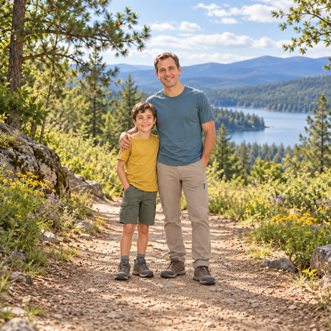
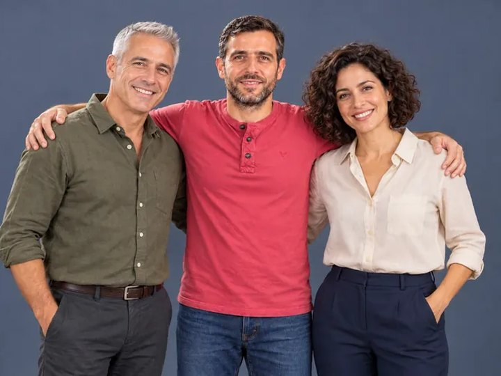
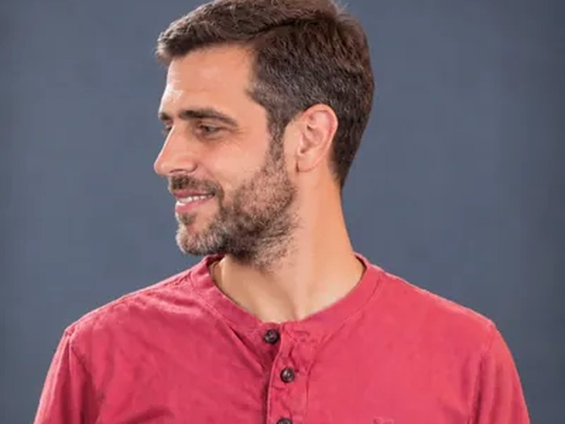
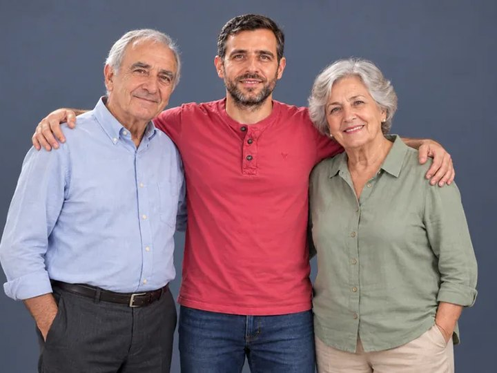
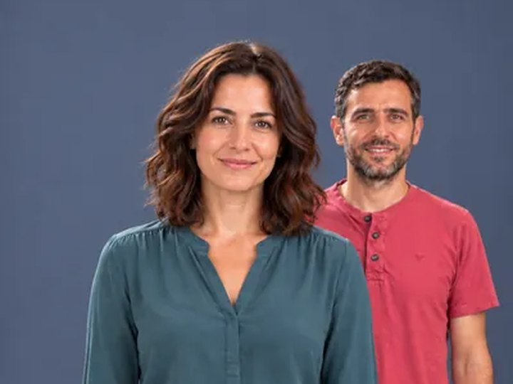
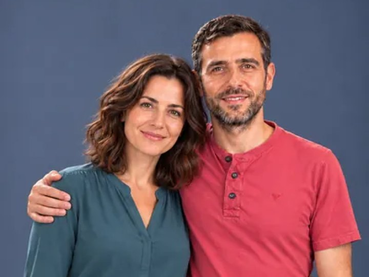
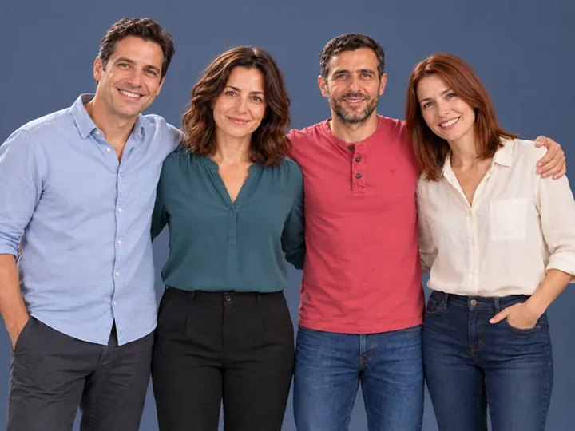

שלב ראשון
אתם
תמונות
מעלים כמה שיש, בכל סדר. ואז ארבעה מסכים.
- 1מסךהמלצה שלנו, אישור שלכם
- 2תיקוןעוברים על מה שצריך
- 3סידורמהישנה לחדשה
- 4צמדיםרק החיבורים הבעייתיים
התמונות שאתם כבר שומרים הופכות לסרט אחד, שרואים בו את השנים עוברות.
בין תמונה לתמונה הוא גדל מול העיניים. זה קטע אחד, ומהם נבנה כל הסרט.

התמונה הראשונהילד עם אביו
הקטעחמש שניות שמחברות ביניהן
התמונה השנייהשנים אחר כך, על המגרש
את הייצור אנחנו עושים. מה שנשאר לכם זה לאשר.
מעלים כמה שיש, בכל סדר. ואז ארבעה מסכים.
כל צמד הופך לקטע של חמש שניות. ברקע, גם אם סגרתם את הדף.
בוחרים שיר, ומורידים קובץ אחד מוכן לשליחה.
כך נראה סרט שיוצא מכאן. הדמות בו נוצרה במחשב ועברה בדיוק את אותו תהליך.






רוצים סרט כזה מהתמונות שלכם? פנו אלינו כדי להזמין.